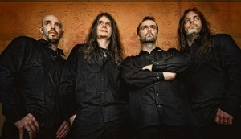
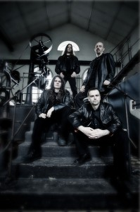

With a steady evolution from their early days as a speed metal band to their current, renowned musical alchemy of glory, drama, and grandiosity, Germany’s Blind Guardian have long since made their mark as the world’s definitive melodic/progressive rock band. For many, they need no introduction, as the band possesses a track record and back catalogue of classic staples that perhaps only Iron Maiden can match. Called everything from heavy metal bards to modern-day minstrels, BLIND GUARDIAN possess the ability to transport their legions of fans to new landscapes with their majestic songwriting, fantastically themed lyrics, and their meticulous, emotion-packed music.
Founded under the name Lucifer’s Heritage in Krefeld, Germany by vocalist & bassist Hansi Kürsch, lead guitarist André Olbrich, rhythm guitarist Marcus Dork, and drummer Thomen Stauch, the band released only two demos – 1985’s Symphonies Of Doom and 1986’s Battalions Of Fear – before landing a record deal with No Remorse Records. Inspired by the Fates Warning album, Awaken The Guardian, band members decided to change their name to Blind Guardian and soon acquired new rhythm guitarist Marcus Siepen. Produced by Kalle Trapp (Saxon, Grave Digger), their 1988 debut album, Battalions Of Fear, showed a heavy influence by Iron Maiden and Helloween. On 1989’s Follow The Blind (also produced by Trapp), they leaned toward Testament’s musical direction, but also experimented with orchestral parts for the first time. More significantly, the album served as their introduction to the Japanese market where they ranked high on the import charts for half a year, poising them for a possible breakthrough with their third release. The band’s reputation continued to grow via word-of-mouth, and when Tales From The Twilight World sold 30,000 copies in their home country alone, Blind Guardian reached the critical juncture in their career they had hoped for. Not only did they feel they had become better musicians and songwriters; they also penned a very distinct sound in the process, and record labels across Europe began courting them. Signing with Virgin Records in 1992, they were one of the very few metal bands to be signed on a major label.
Their Virgin debut, Somewhere Far Beyond, sold over 130,000 copies. After entering the international charts, Blind Guardian took their first trip to Japan to record their first live album, Tokyo Tales. Playing two sold-out audiences to over 4,000 enthused fans, the show captured how strong, special, and symbiotic the relationship between artist and audience can be. The summer of 1994 had BLIND GUARDIAN traveling to Sweet Silence Studios in Denmark to work with Flemming Rasmussen (Metallica) on the Imaginations From The Other Side album. After its release, they toured throughout Europe and secured themselves a very special international honor: they became the third-ever heavy metal band (after Metallica and Bon Jovi) to play in Thailand and received a heroes’ welcome into the country. At this point in their career and with six successful albums in their discography, Blind Guardian opted not to release a standard “Best Of” compilation. Instead, to give their fans something truly special, they assembled The Forgotten Tales in 1996, a collection of a few cover songs (“Surfin’ USA,” “Barbara Ann,” and “Long Tall Sally”), a live version of the fan favorite “The Bard’s Song (In the Forest),” plus four acoustic versions and one orchestral arrangement of previously released Blind Guardian songs.